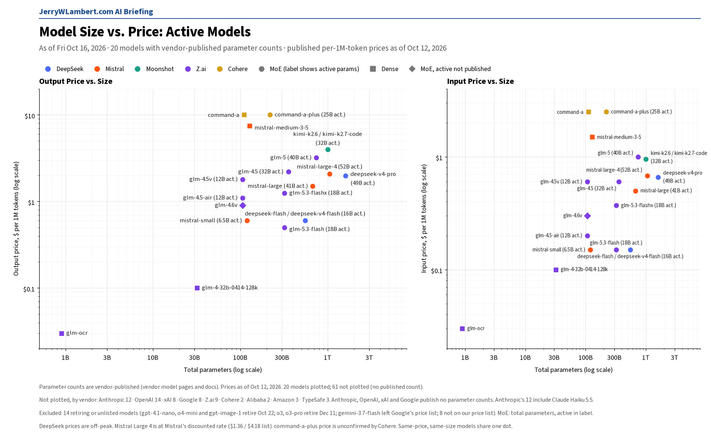
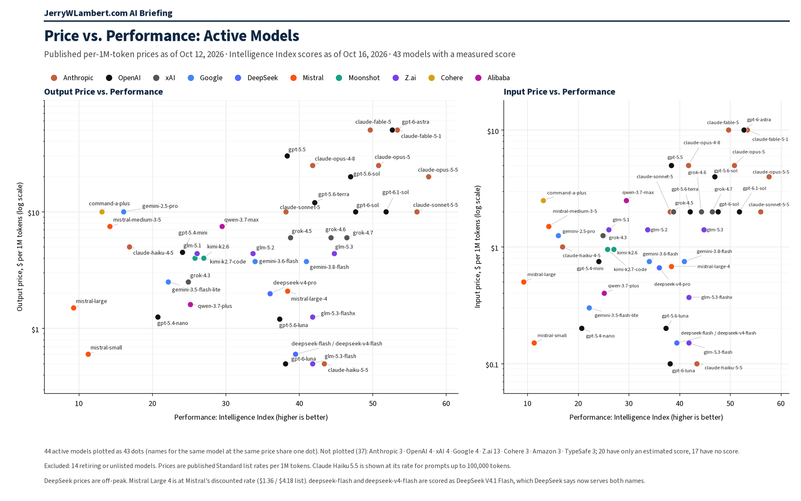

Daily Model Brief, October 16, 2026
No vendor changed a token price overnight. Anthropic took Claude Opus 5.5 fast mode out of research preview at $8 / $40, DeepSeek launched per-request Search and Fetch APIs, and Meta released open weights for Muse Spark.
Download PDFExecutive Summary
No vendor changed a chat or token price overnight, and no new token-priced model appeared from the vendors tracked here. Meta's Muse Wonder (muse-wonder-1.0), Google's Gemini 4 Argon (gemini-4-argon) and TypeSafe's Jev 1.14 (jev-1.14.0) are unchanged from yesterday.
Anthropic took fast mode on Claude Opus 5.5 (claude-opus-5-5) out of research preview. It no longer needs a beta header or an access request, it has a default rate limit in the Start, Build and Scale usage tiers, and it is also offered on Claude in Microsoft Foundry. Price: $8 input and $40 output per million tokens, twice the standard Opus 5.5 rate. Fast mode on Opus 5 and Opus 4.8 stays in research preview at $10 / $50. Standard Claude prices are unchanged.
DeepSeek launched Search and Fetch APIs at $0.75 per 1,000 successful requests each, billed per request rather than per token. DeepSeek says web-search calls from Claude Code and Codex are free for two weeks after launch; it has not announced when billing starts. DeepSeek's token prices are unchanged.
Meta published Muse Spark Open, an open-weight release of Muse Spark (816B total and 42B active parameters, 1,048,576-token context, Muse Model License) for self-hosting or third-party hosts. Meta lists no Model API price for it. Mistral listed Timestral 1.0, a time-series forecasting family in public preview, also with no API price yet.
OpenAI's January 14, 2027 shutdown for GPT-4.1, GPT-4.1 mini, GPT-4o and GPT-4o mini still stands, with gpt-6-luna as the named replacement. gpt-4.1-nano, o4-mini and gpt-image-1 shut down next Thursday evening, October 22 (CT). Gemini 4 Argon's launch price of $2.00 / $0.10 / $10.00 runs through November 30, then $4.00 / $0.20 / $20.00.
xAI, Google, Moonshot, Z.ai, Alibaba, MiniMax, Mistral, Perplexity, Meta, OpenAI and TypeSafe published no token price changes. IBM Granite is unchanged at $0.0636 / $0.265 and could not be fully verified today. Prices from Amazon and ByteDance could not be confirmed today; Microsoft lists no pay-as-you-go prices and Cohere still publishes no full token matrix.
What This Means for Customers
- If you use Claude Opus 5.5 fast mode, you no longer need the beta header or an access request. It bills at $8 / $40 per million tokens, twice the standard rate, so make sure your apps and gateways turn it on only where the speed is worth the cost.
- If your agents search the web through DeepSeek, budget $0.75 per 1,000 successful Search or Fetch requests. These bill per request, not per token, so track them separately from token spend.
- If you want to self-host a large open model, Meta's Muse Spark Open weights are available under the Muse Model License. Meta's hosted Muse Spark API is unchanged at $1.25 input, $0.15 cached and $4.25 output.
- If you want to try
gemini-4-argon, the launch price still runs through November 30. Budget at $4.00 input and $20.00 output per million tokens from December 1, and remember that thinking tokens bill as output. - If you call
gpt-4o,gpt-4o-mini,gpt-4.1orgpt-4.1-mini, you still have until January 14, 2027. Each GPT-4.1 model lists only one snapshot, so the plain names stop working then too. Testgpt-6-lunanow; it lists at $0.10 input, $0.01 cached and $0.50 output per million tokens (short context), well below gpt-4.1 at $2.00 / $8.00. - The October 22 and 23 dates are unchanged.
gpt-4.1-nano,o4-miniandgpt-image-1(OpenAI) shut down the evening of October 22 (CT), along with Google'sgemini-omni-flash-previewand Veo 3.1 previews. Google's deep-research-pro preview shuts down October 23. Perplexity retires its routes to older OpenAI models at 7:00 PM CT on October 23. - Claude Haiku 4.5 is still active. Anthropic lists retirement not sooner than October 15, 2026, a date that has now passed, and still sets no date. Keep a tested fallback ready.
New Models and Price Changes
Prices in USD per 1M tokens.
| Vendor | Model ID | Status | Input | Cached | Output |
|---|---|---|---|---|---|
| Anthropic | claude-opus-5-5 (fast mode) | Out of research preview; no beta header or access request needed. Twice the standard rate. | $8.00 | Not listed | $40.00 |
| Anthropic | claude-opus-5-5 | Standard price unchanged. | $4.00 | $0.20 | $20.00 |
| DeepSeek | Search API / Fetch API | New. Billed per request: $0.75 per 1,000 successful requests each. Token prices unchanged. | Per request | — | Per request |
| Meta | Muse Spark Open (weights) | New open-weight release of Muse Spark (816B total / 42B active). No Meta API price. | Not listed | Not listed | Not listed |
| Mistral | Timestral 1.0 | New time-series forecasting family, public preview. No API price. | Not listed | Not listed | Not listed |
| Meta | muse-wonder-1.0 | Unchanged since its Oct 13 API opening (preview). | $4.00 | $0.20 | $20.00 |
| Meta | muse-spark | Unchanged. | $1.25 | $0.15 | $4.25 |
| gemini-4-argon | Unchanged. Stable, paid tier only. Launch price through Nov 30, 2026 (thinking billed as output). | $2.00 | $0.10 | $10.00 | |
| gemini-4-argon (from Dec 1, 2026) | Scheduled Standard price printed by Google. | $4.00 | $0.20 | $20.00 | |
| TypeSafe | jev-1.14.0 / jev-preview | Unchanged. jev-preview points here; output free. | $0.042 | — | $0 |
| TypeSafe | jev-1.13.0 / jev-latest | Unchanged. jev-latest still points here. | $0.042 | — | $0 |
| OpenAI | gpt-4.1 | Shuts down Jan 14, 2027; replacement gpt-6-luna. Price unchanged. | $2.00 | $0.50 | $8.00 |
| OpenAI | gpt-4.1-mini | Shuts down Jan 14, 2027; replacement gpt-6-luna. Price unchanged. | $0.40 | $0.10 | $1.60 |
| OpenAI | gpt-4o | Shuts down Jan 14, 2027; replacement gpt-6-luna. Price unchanged. | $2.50 | $1.25 | $10.00 |
| OpenAI | gpt-4o-mini | Shuts down Jan 14, 2027; replacement gpt-6-luna. Price unchanged. | $0.15 | $0.075 | $0.60 |
| OpenAI | gpt-6-luna | Named replacement. Unchanged (short context). | $0.10 | $0.01 | $0.50 |
| IBM | granite-4-h-small | Unchanged. Could not fully re-verify today. | $0.0636 | Not listed | $0.265 |
- Anthropic fast mode: Claude Opus 5.5 fast mode is out of research preview and no longer needs the fast-mode-2026-02-01 beta header or an access request. It carries a default rate limit in the Start, Build and Scale usage tiers at $8 input and $40 output per million tokens, and is also offered on Claude in Microsoft Foundry. Opus 5 and Opus 4.8 fast mode remain research preview at $10 / $50. Standard Opus 5.5 cache reads cost $0.20 per million tokens.
- DeepSeek Search and Fetch APIs: $0.75 per 1,000 successful requests each. Web-search calls from Claude Code and Codex are free for two weeks after launch; DeepSeek has not announced the billing start date. No change to DeepSeek model token prices.
- Meta Muse Spark Open: an open-weight mixture-of-experts release of Muse Spark with 816B total and 42B active parameters and a 1,048,576-token context, under the Muse Model License, for self-hosting or third-party hosts. Meta's Model API price tables are unchanged. It scores 38.9 on the Intelligence Index; that is an independent score, not a Meta figure.
- Mistral Timestral 1.0: a time-series forecasting family in four sizes (209M, 123M, 28M and 5M parameters), public preview, weights under a Modified MIT license. Mistral's prices are unchanged, and Mistral Large 4 stays on sale at $0.68 input and $2.09 output (list $1.36 / $4.18), with no end date.
- Gemini 4 Argon: context window 1,048,576 tokens (input and output combined); maximum output 65,536 tokens per synchronous request, or up to 1,048,576 with long decode and background execution. Batch and Flex: $1.00 input / $0.05 cached / $5.00 output through Nov 30, then $2.00 / $0.10 / $10.00. Priority: $3.60 / $0.18 / $18.00 through Nov 30, then $7.20 / $0.36 / $36.00. Google's prices still show Last updated October 15, 2026 (UTC). The invite-only Contributor tier is not on the public Standard list.
- OpenAI's October 14 notice covering gpt-4o-2024-08-06, gpt-4o-2024-11-20, gpt-4o-mini-2024-07-18, gpt-4.1-2025-04-14 and gpt-4.1-mini-2025-04-14 is unchanged. Fine-tuned versions follow the same January 14, 2027 shutdown schedule.
- Prices from Amazon, ByteDance and IBM could not be confirmed today; Microsoft lists no pay-as-you-go prices and Cohere still publishes no full token matrix. Their last confirmed prices stand.
Deprecations
| Vendor | Model ID | Shutdown (CT) | Replacement | Note |
|---|---|---|---|---|
| OpenAI | gpt-4.1 (gpt-4.1-2025-04-14) gpt-4.1-mini (gpt-4.1-mini-2025-04-14) | Wed Jan 13, 2027, 6:00 PM CT | gpt-6-luna | Unchanged since Oct 14. OpenAI lists Jan 14, 2027 with no time; 6:00 PM CT Jan 13 is 00:00 UTC Jan 14. Each is the only listed snapshot, so the plain names stop too. |
| OpenAI | gpt-4o-2024-08-06 gpt-4o-2024-11-20 gpt-4o-mini-2024-07-18 | Wed Jan 13, 2027, 6:00 PM CT | gpt-6-luna | Unchanged since Oct 14. Same notice and timing. Fine-tuned versions follow the same schedule. |
| gemini-3.5-flash | Not shutting down (Google lists N/A) | gemini-3.6-flash (Google auto-route) | Unchanged since Oct 12. Google says the endpoint is not shutting down and routes requests automatically. Not selectable in Google AI Studio. | |
| gemini-3.7-flash | Not shutting down (Google lists N/A) | gemini-3.8-flash (Google auto-route) | Unchanged since Oct 12. Same wording as gemini-3.5-flash. | |
| deep-research-pro-preview-12-2025 | Fri Oct 23, 2026 (time not stated) | deep-research-preview-04-2026 | Unchanged. | |
| OpenAI | gpt-4.1-nano o4-mini gpt-image-1 | Thu Oct 22, 2026, 7:00 PM CT | gpt-5.6-luna gpt-5.6-terra gpt-image-2.5-sunburst or gpt-image-2.5-flare | Unchanged. OpenAI lists Oct 23 with no time; 7:00 PM CT Oct 22 is 00:00 UTC Oct 23. |
| gemini-omni-flash-preview | Thu Oct 22, 2026 (time not stated) | gemini-omni-1.1-flash | Unchanged. | |
| veo-3.1-generate-preview veo-3.1-fast-generate-preview veo-3.1-lite-generate-preview | Thu Oct 22, 2026 (time not stated) | gemini-omni-1.1-flash | Unchanged. | |
| gemini-3.1-flash-image | No shutdown date announced | gemini-nano-banana-2.1 | Unchanged. | |
| gemini-3.1-flash-tts-preview gemini-2.5-flash-preview-tts gemini-2.5-pro-preview-tts | Tue Nov 17, 2026 (time not stated) | gemini-3.8-flash-tts or gemini-3.8-flash-lite-tts | Unchanged. | |
| gemini-3.1-flash-live-preview gemini-2.5-flash-native-audio-preview-12-2025 | Tue Nov 17, 2026 (time not stated) | gemini-3.8-live | Unchanged. | |
| Anthropic | claude-sonnet-4-5-20250929 | Mon Nov 30, 2026 (time not stated) | claude-sonnet-5-5 | Unchanged. |
| Anthropic | claude-haiku-4-5-20251001 | Not sooner than Thu Oct 15, 2026; no date set | None named | Watch item. The earliest date has passed; still active on Anthropic's deprecations page today with no date set. |
| Cohere | command-r command-r-plus | Deprecated Sep 15, 2025; no shutdown date set | command-r-08-2024 command-r-plus-08-2024 command-a-03-2025 | Closed to new customers; existing users keep access until retirement. |
- Perplexity will retire its Agent API and Orchestrator API routes to older OpenAI models (openai/gpt-5.4, gpt-5.4-mini, gpt-5.4-nano, gpt-5.2, gpt-5.1, gpt-5 and gpt-5-mini) at 7:00 PM CT on Fri Oct 23, 2026 (00:00 UTC Oct 24). Unchanged.
- OpenAI's earlier notices are unchanged: gpt-5.3-codex, gpt-5.1 and gpt-5.4-nano shut down April 1, 2027. OpenAI also lists the /v1/audio/translations endpoint shutting down February 26, 2027, replaced by v1/realtime/translations (endpoint only; no model id).
- Google also lists deep-research-preview-04-2026 and deep-research-max-preview-04-2026 with no shutdown date announced. Google shows no shutdown-date changes today.
- Unverified: Google's deprecation schedule still shows gemini-2.5-flash-image shutting down Mon Mar 15, 2027, with gemini-3.1-flash-lite-image as the replacement, while its price list says it shut down Oct 2, 2026. Confirm with Google before you budget either date.
Model Size vs. Price

Across the 20 active models whose vendors publish parameter counts, price rises only loosely with total size (rank correlation 0.39 on output price). Anthropic, OpenAI, xAI and Google publish no parameter counts, so their models, including Claude Haiku 5.5 and GPT-6.1 Sol, are not plotted. Google's Gemini 4 Argon and Meta's Muse Wonder are not yet in this chart. Prices as of October 12, 2026.
Price vs. Performance

Across the 44 active models with an Intelligence Index score, price rises with performance only loosely (rank correlation 0.45 on output price). Claude Haiku 5.5 leads at $0.50 or less per million output tokens (43.4); GPT-6.1 Sol scores 51.8 at $10. Google's Gemini 4 Argon (52.6) and Meta's Muse Wonder (52.4) are not yet in this chart. Chart prices as of October 12, 2026.
All times Central. Vendor prices, dates and model IDs are as of 8:29 AM CT on October 16, 2026. Chart prices are as of October 12, 2026. Performance scores are as of October 16, 2026. Items that could not be confirmed are marked unverified.